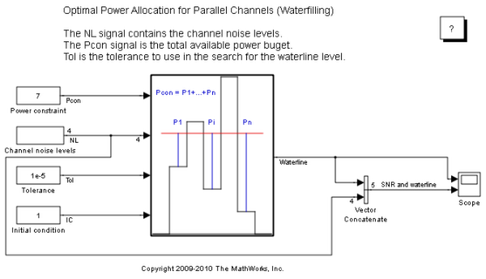
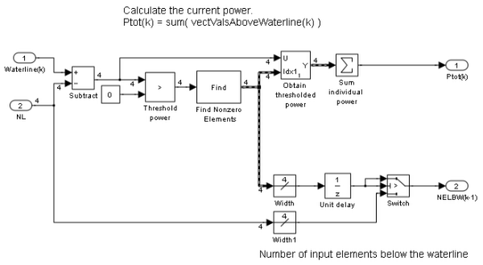

Parallel Channel Power Allocation
The purpose of this demo is to show a potential use of the Find block. This block outputs a variable-size signal containing the indices of the nonzero values of the input.
Contents
About This Demo
Open the demo model sldemo_varsize_channel_pow_alloc. This model implements the waterfilling algorithm for obtaining the optimal power allocation for communication channels when a power budget exists. The communication channels involved are independent (i.e., parallel channels) and have different noise levels.
The algorithm iteratively increases the value of the waterline, so that the channels which have a noise level less than the waterline are broadcast. The power used by these transmitting channels is equal to the difference between the waterline and the noise level of the channel. The sum of the power used by all the channels transmitting should satisfy the power budget within the specified tolerance.
The Find block is used in the calculation of the total power used for a certain waterline value. The channels which are set to transmit at that waterline level are selected using logical indexing. The logical indices are obtained after thresholding the difference of the waterline and the channel noise levels. As a result, the channels with noise levels larger than the waterline are assigned a zero, and those with noise levels below the waterline are assigned ones. The Find block is used for converting the logical indices into linear indices. Note that this signal is properly modeled by a variable-size signal since the number of channels below the threshold is unknown at compile time. The linear indices are fed into a Selector block that picks the channel transmission powers. Subsequently, these powers are summed to get the current value of used power. If this value is smaller than the power budget, the waterline is increased and the process is repeated until the used power equals the power constraint.
 